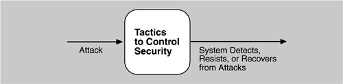

| [ Team LiB ] |
|
5.5 Security TacticsTactics for achieving security can be divided into those concerned with resisting attacks, those concerned with detecting attacks, and those concerned with recovering from attacks. All three categories are important. Using a familiar analogy, putting a lock on your door is a form of resisting an attack, having a motion sensor inside of your house is a form of detecting an attack, and having insurance is a form of recovering from an attack. Figure 5.8 shows the goals of the security tactics. Figure 5.8. Goal of security tactics RESISTING ATTACKSIn Chapter 4, we identified nonrepudiation, confidentiality, integrity, and assurance as goals in our security characterization. The following tactics can be used in combination to achieve these goals.
DETECTING ATTACKSThe detection of an attack is usually through an intrusion detection system. Such systems work by comparing network traffic patterns to a database. In the case of misuse detection, the traffic pattern is compared to historic patterns of known attacks. In the case of anomaly detection, the traffic pattern is compared to a historical baseline of itself. Frequently, the packets must be filtered in order to make comparisons. Filtering can be on the basis of protocol, TCP flags, payload sizes, source or destination address, or port number. Intrusion detectors must have some sort of sensor to detect attacks, managers to do sensor fusion, databases for storing events for later analysis, tools for offline reporting and analysis, and a control console so that the analyst can modify intrusion detection actions. RECOVERING FROM ATTACKSTactics involved in recovering from an attack can be divided into those concerned with restoring state and those concerned with attacker identification (for either preventive or punitive purposes). The tactics used in restoring the system or data to a correct state overlap with those used for availability since they are both concerned with recovering a consistent state from an inconsistent state. One difference is that special attention is paid to maintaining redundant copies of system administrative data such as passwords, access control lists, domain name services, and user profile data. The tactic for identifying an attacker is to maintain an audit trail. An audit trail is a copy of each transaction applied to the data in the system together with identifying information. Audit information can be used to trace the actions of an attacker, support nonrepudiation (it provides evidence that a particular request was made), and support system recovery. Audit trails are often attack targets themselves and therefore should be maintained in a trusted fashion. Figure 5.9 provides a summary of the tactics for security. Figure 5.9. Summary of tactics for security
|
| [ Team LiB ] |
|